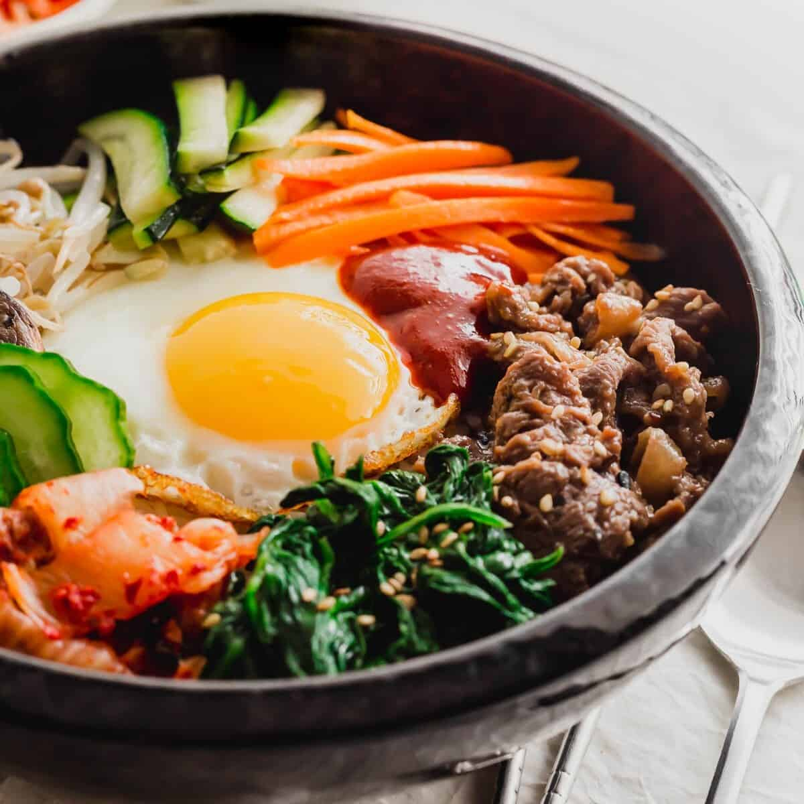

Bibimbap

Description
One of the most famous Korean dishes, bibimbap means "mixed rice," where bibim = mixed and bap = rice. It is a cooked rice dish traditionally featuring lightly sauteed vegetables, kimchi, bellflower root, fern brake (gosari) yellow pickled radish (danmuji), marinated meat (such as bulgogi beef), egg, and bibimbap sauce, which contains gochujang Korean red pepper sauce. The arrangement of the vegetables is aesthetically pleasing, with the egg serving as the centerpiece. All the ingredients are stirred together before enjoying.
Ingredients
Vegetables:
- 1 long cucumber sliced
- 1 lb bean sprouts
- 1 bunch spinach washed
- 2 teaspoon sesame oil divided
- 1 tablespoon vegetable oil
- 1 carrot julienned
- 1 zucchini julienned
- 5-6 Chinese/shiitake mushrooms soaked overnight and sliced
- 1 teaspoon soy sauce
Bulgogi beef:
- 1 tablespoon vegetable oil
- ½ lb bulgogi beef
Bibimbap sauce:
- 2 tablespoon gochujang (Korean red chili pepper paste)
- 1 teaspoon sesame oil
- ½ teaspoon garlic powder
- 1 teaspoon granulated sugar
- 1 teaspoon rice wine vinegar
For serving:
- 2 C cooked rice
- 4 fried eggs or raw if making dolsot-style
- kimchi
- sesame seeds
Steps
Cook the bean sprouts:
- Bring a large pot of water up to a boil.
- Add the bean spouts to a colander or strainer over a sink.
- Pour some of the hot boiling water over the bean sprouts to lightly blanch.
- Rinse the sprouts under cold water.
- Drain well and add 1 teaspoon of sesame oil.
- Lightly toss and add a sprinkle of sesame seeds.
Cook the spinach:
- With the remaining hot water, add in the spinach and blanch for 1-2 minutes.
- Drain the spinach and rinse under cold water.
- Squeeze out any excess moisture.
- Add 1 teaspoon of sesame oil.
- Lightly toss and add a sprinkle of sesame seeds.
Cook the remaining vegetables:
- Heat up a frying pan or wok over medium-high heat.
- Add about 1 tablespoon of vegetable oil to the pan.
- Add the julienned zucchini and sauté, stirring every now and then, until slightly softened, about 1-2
minutes.
- Transfer the cooked zucchini from the pan into a large separate bowl or dish.
- Next, add in the julienned carrot and repeat, sauteing until slightly softened, another 2-3 minutes.
- Transfer the cooked carrot into the dish with the other cooked vegetables.
- Add the mushrooms to the pan, and sauté, until the mushrooms are cooked through, about 4-5 minutes.
- Drizzle in 1 teaspoon of soy sauce.
- Transfer the cooked mushrooms into the dish with the other cooked vegetables. Set aside.
Cook the bulgogi beef:
- In a large frying pan, add 1 tablespoon of vegetable oil and heat to high heat.
- Add the thinly sliced marinated beef and stir-fry until the meat is fully cooked, about 5 minutes.
- Remove from pan and set aside.
- Make the bibimbap sauce:
- In a small bowl, combine gochujang paste with sesame oil, garlic powder, granulated sugar and rice wine
vinegar.
- Mix well. Set aside.
Assemble:
- Place hot cooked rice into a large bowl.
- Arrange a small portion of each vegetable in a visually appealing manner around the edge of the bowl.
- Add a fried sunny side up egg in the center of the bowl. (Or raw egg yolk if making dolsot bibimbap).
- Garnish with bibimbap sauce and sesame seeds.